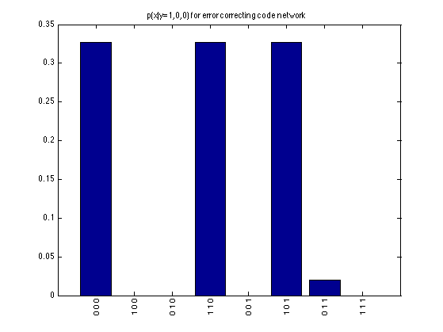

Contents
Demo of error correcting code
----- | | | v x1 x2->x3 | | | y1 y2 y3
x3 = even parity bit yi = noisy copy
% This file is from pmtk3.googlecode.com
Build model
xs = 1:3; ys = 4:6; G = zeros(6,6); G(xs(1:2), xs(3)) = 1; for i=1:3, G(xs(i), ys(i)) = 1; end ns = 2*ones(1,6); CPD = cell(1,6); prior = [0.5 0.5]; for i=1:2 CPD{xs(i)} = tabularFactorCreate(reshape(prior, 2, 1), xs(i)); end % even parity T = zeros(2,2,2); for i=1:2 for j=1:2 ii = i-1; jj = j-1; if (iseven(ii+jj)) T(i,j,:) = [1 0]; else T(i,j,:) = [0 1]; end end end %dispcpt(T) CPD{xs(3)} = tabularFactorCreate(T, xs); noiseLevel = 0.2; T = [1-noiseLevel noiseLevel; noiseLevel 1-noiseLevel]; for i=1:3 CPD{ys(i)} = tabularFactorCreate(T, [xs(i) ys(i)]); end joint = tabularFactorMultiply(CPD);
Decode message
yobs = [1 0 0]+1; % marginal MAP mmap = zeros(1,3); for i=1:3 p = tabularFactorCondition(joint, xs(i), sparsevec(ys, yobs)); fprintf('p(x%d=1|y)=%5.3f\n', i, p.T(2)) mmap(i) = argmax(p.T)-1; end mmap % find joint modes of posterior pCond = tabularFactorCondition(joint, xs, sparsevec(ys, yobs)); pmax = max(pCond.T(:)); ndx = find(pCond.T == pmax) modes = ind2subv(2*ones(1,3), ndx)-1
p(x1=1|y)=0.653
p(x2=1|y)=0.347
p(x3=1|y)=0.347
mmap =
1 0 0
ndx =
1
4
6
modes =
0 0 0
1 1 0
1 0 1
Display joint
K = 2^3;
lab=cellfun(@(x) {sprintf('%d ',x)}, num2cell(ind2subv(2*ones(1,3),1:K)-1,2));
figure;
bar(pCond.T(:))
set(gca,'xtick',1:K);
xticklabelRot(lab, 90, 10, 0.01)
title('p(x|y=1,0,0) for error correcting code network')
printPmtkFigure('errorCorrectingCodePost')
